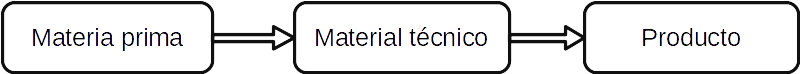

Classification of materials¶
Materials can be classified according to many criteria. In this unit, materials will be studied according to their processing, depending on the origin of the raw material, the types of materials and their classification according to the impact they have on the environment.
Index of contents:
Classification according to the level of processing¶
{kind=link}
Materials follow a transformation process from the moment they are extracted until they become a useful object.
- Raw material
It is a primary material found in nature. Raw materials can be transformed into technical materials to manufacture products.
Examples of raw materials are: wool, skin, silk, cotton, wood, iron, copper, oil, clay, latex.
- Technical equipment
These are the materials that are obtained by transforming raw materials. They are used to make finished products.
Some examples of technical materials that are obtained from raw materials:
- Solid planks, slats, sawdust, chipboard, paper, cardboard are made from wood.
- Threads, ropes, fabrics, felts are made from cotton.
- Tubes, plates, angles, screws, beams, nails, wires are made from iron.
- Threads, fabrics, ropes, sheets are made from plastic.
- Leather is manufactured from the skin.
- Finished product
These are the products that we can buy in stores. They are composed of various technical materials.
Examples of finished products and the materials they use.
- Trousers: made with cotton fabric and thread, plastic threads, brass rivets and zipper, leather label.
- Chair: made with iron legs and screws, plugs, fabrics and plastic paints, wooden seat and back.
- Living room shelf: made of chipboard, crystals from the sand, nails and iron screws, plastic handles.
Classification according to the origin of the raw material¶
Materials can be classified according to the origin of the raw material:
- Materials of plant origin:
- Cotton, linen, wood, vegetable oils, resins, hemp, rubber, cork, cellulose.
- Materials of animal origin:
- Wool, skin, silk.
- Materials of mineral origin:
- Marble, clay, metals, oil.
Classification according to the type of material¶
We can classify materials by associating those whose properties are similar. For example, metals, plastic materials, etc.
According to this classification we have the following materials:
They come from the stones or sands of nature. They can be classified into the following groups.
- Natural: marble, granite, slate, limestone, sandstone.
- Binders: plaster, cement, concrete.
- Ceramics: clay, earthenware, stoneware, porcelain.
- Glass.
They are made of solid wood or pressed wood derivatives.
- Cut wood: soft and hard.
- Veneered wood: Plywood, laminated wood.
- Chipboard: chipboard, DM.
- Paper and paperboard.
They are materials that group from the fabrics used in clothing or furniture, to a leather ball or the sail of a boat. Although their origin is very different, they all have in common their great flexibility and the sewing and gluing processes used in manufacturing.
- Threads: Silk, wool, cotton, polyester.
- Fabrics: jeans, wool jersey, boat sail.
- Leather: shoes, gloves, armchairs, belts, containers for liquids.
They are extracted by heating oxides and sulfides found in nature in the form of rocks. They can be classified into the following groups.
- Iron-based: iron, steel, stainless steel.
- Copper-based: copper, brass, bronze.
- Light metals: aluminum, lithium, magnesium.
- Heavy metals: lead, chromium, cadmium, mercury.
- Precious metals: gold, silver, rhodium, platinum.
They come from natural gas or refined oil. They can be classified into the following groups.
- Thermoplastics: PET, polyethylene, PVC, polypropylene, polystyrene, nylon, Teflon.
- Thermosets: bakelite, melamine, epoxy resin.
- Elastomers: latex, neoprene, silicones, synthetic rubber.
Exercises¶
Classify the following materials according to their mineral, vegetable or animal origin.
- Leather belt
- Cotton socks
- Polyester leggings
- Tiles and bricks
- Silk tie
- Marble countertop
- Wood table
- Wool jersey
- Iron door
- Aluminum window
- Linen shirt
- Hemp espadrilles
- Terrazzo floor
Find five everyday objects in your environment that are made of each of these types of materials:
Metal objects.
Plastic objects.
Wooden objects.
Objects of stone materials.
Objects with materials of animal origin.
Search the Internet for five everyday objects that are found in your environment and are made of toxic materials.
Cuestionarios¶
Test-type questionnaires on the classification of materials.